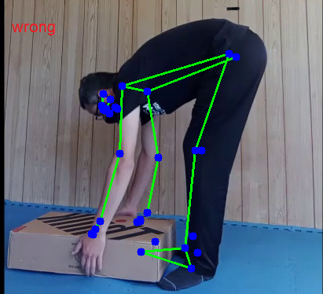
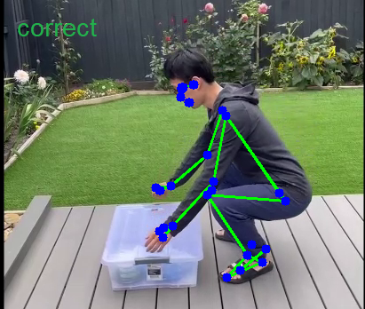
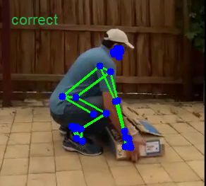

This tool will help you lift heavy weights correctly. Please enable the camera for this website to be able to use the tool.
How to run: After the camera is initialized, please stand 2-3 meters away from the camera with your side facing the cam. You should see a real-time prediction of your poster. The prediction will be displayed as text on the left side of your streaming video. Examples are given below:
  